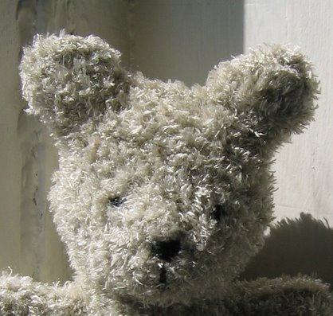

|
||
Premium Patterns Wintry Mix Mitts Love Bytes HawkeyeFree Patterns Kiddie Cadet Summerlin Ruffled Scarf Seamless DS Sock Simply Seamless Pouch Myriads of MushroomsExtras DIY Mitten Blocker Felt Patch Tutorial Yarn Dyeing Tutorial Needle Pouches Knitting Journal |
June 20, 2007 - Posted by Grace SchneblyBeary CuteAlice and I have actually got some knitting done in the past few days. I finished up knitting the Marsupial Tote from Stitch n’ Bitch for my friends birthday. All I need to do is felt it now, so hopefully I will get around to that tonight or tomorrow. I am going to start art the La Luz Eye Mask from Handknit Holidays today and will take a picture of my work soon! Also Alice has been working away on her scarf and is over 5” long. I love how it is turning out and I may just have to make one for myself. I also wanted to show off a teddy bear I knit a while ago…  Project Specs A while ago I was looking for a good free teddy bear knitting pattern, but it was pretty difficult to find one that suited my tastes. The only two that I thought were okay were Bubby from Knitty and Harry Bear from Berroco. Still there is something about both of those bears that looks a little off; I think that it is the decreases at the top of Bubby’s head and the strange lopsided embroidery of Harry Bear’s face that make them look strange. Both could be really cute if done right though, and I figured I would give Harry Bear a try when Alice gave me a ball of Berroco Chinchilla.
I think this little guy turned out so cute, and the yarn is really soft. This bear isn’t a toy for children even with the embroidered face. The yarn just sheds way too much and you could pull out little pieces of fiber. I wrote a full review of Berroco Chinchilla if you are interested. Since I made this little guy I have came across several cute bear patterns for sale that I want to try out. Fuzzy Mittens sells lots of knitting patterns for different animals including two different bears. Fiber Trends has the Marigold and Baby Bears patterns, which are felted. Jess Hutch has a pattern for Henry Bear in her impossible to find Unusual Toys for you to Knit and Enjoy booklet (you could probably just modify her Kate if you really wanted to make it without having the pattern). There is also a cute bear in Last Minute Knit Gifts and Bobbi Bear from Blue Sky Alpaca. I don’t know when I will have the time to try all these patterns out but I would love to make them sometime in the future! If you have any favorite teddy bear knitting patterns, please share and leave a comment! |
   Recent ReviewsRecent Posts
 Our Favorites
|
| © 2007 KathrynIvy.com | ||

{kind=link}